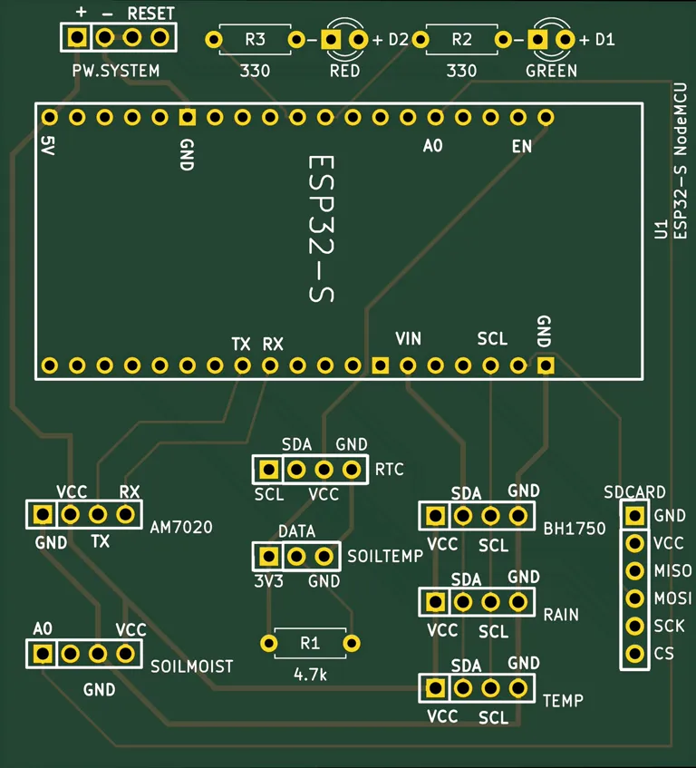
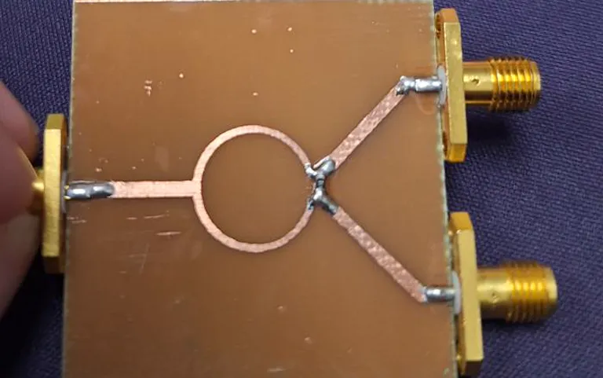

網站製作
WordPress 區塊佈景主題，電腦版與手機版都可以實際瀏覽。
購物網站 製作中
預約網站 製作中
PCB 電路板設計
KiCad 原理圖、Layout 到出檔。

雙層板｜ESP32・感測器・NB-IoT
ESP32 微氣象站控制板
整合 5 種感測器、NB-IoT、microSD 與 RTC，由飛線原型改成正式電路板，韌體也自己寫。ERC、DRC、一致性檢查皆為 0。
看設計內容2.4 GHz 微波電路
HFSS 模擬、自己蝕刻製板、VNA 量測。共 4 個作品。

微帶線電路｜2.4 GHz
Wilkinson 功率分配器等 4 件
實測隔離度 27.5 dB、功率不平衡 0.02 dB、相位不平衡 4.11°，皆符合規格。另有分支線耦合器、環形諧振器、Butler Matrix。
看設計與量測